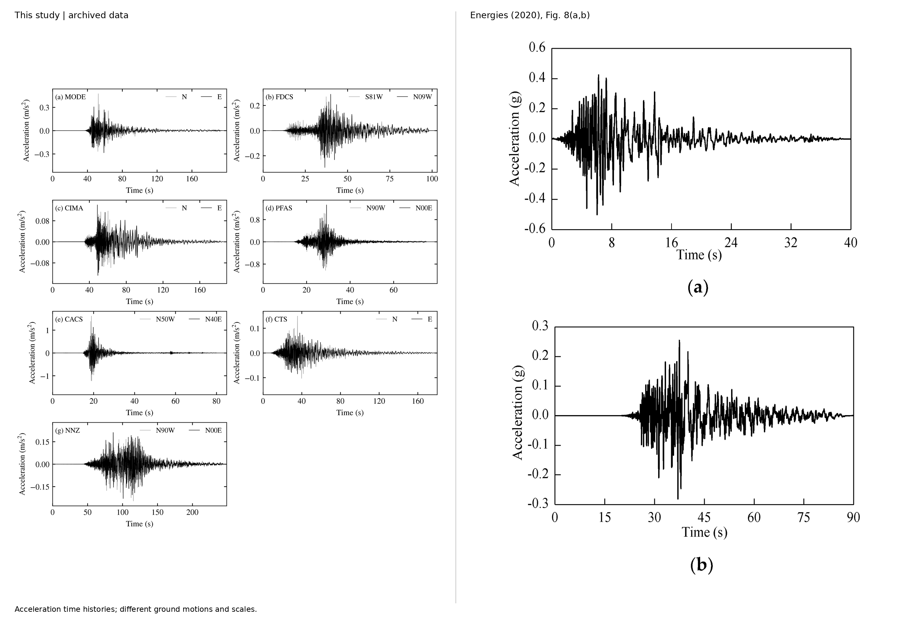
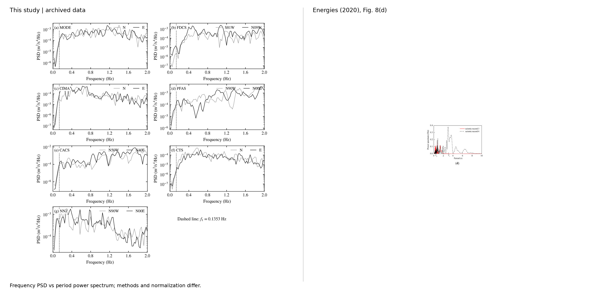
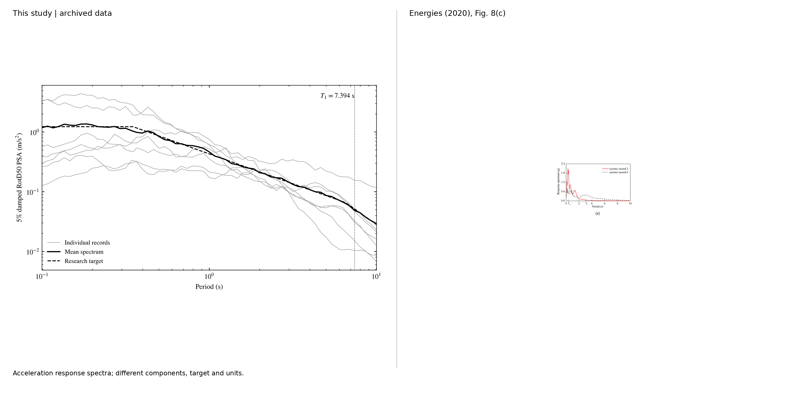
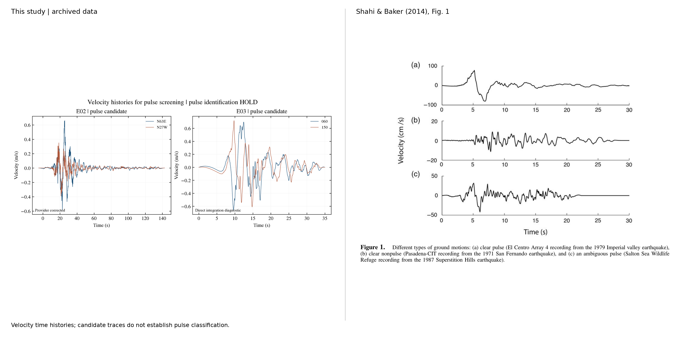

第三章地震动图件 · 文献原图对照
左侧为本文已归档的地震动计算图，右侧为出版方或作者原始文献图。保持源数据及坐标单位，不作为不同地震记录的数值验证。
图3-12 七组双水平加速度时程

Energies 2020 图8(a,b)；不同地震记录、强度单位。 下载拼图图3-13 地震动功率谱

Energies 2020 图8(d)；频率PSD与周期功率谱口径不同，仅方法对照。 下载拼图图3-14 加速度反应谱

Energies 2020 图8(c)；本文采用5%阻尼RotD50研究谱。 下载拼图图3-15 速度脉冲候选

Shahi与Baker 2014 图1；只比较速度时程表现方式，不据此判定脉冲。 下载拼图Energies 2020 原图 · Shahi与Baker原文PDF · SHA256与来源记录